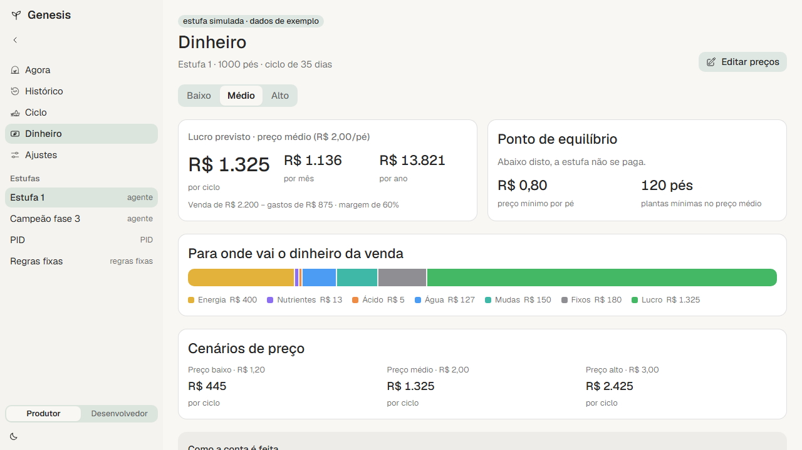
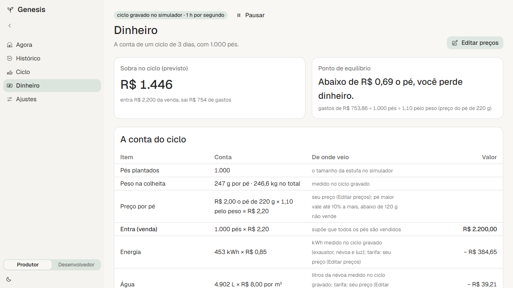

Dinheiro: a planilha do pequeno produtor
A página Dinheiro foi refeita a partir de uma pergunta do Gabriel: o que o pequeno produtor de alface hidropônica faz hoje em planilha que o app pode fazer por ele? Pesquisei, e a resposta guiou a tela: a conta do ciclo em linguagem simples, cada gasto numa linha dizendo de onde veio, o ponto de equilíbrio numa frase, os preços editáveis ali mesmo, e o caderno de vendas e gastos de verdade, comparado com o previsto.
Antes e depois


As capturas do celular e das outras partes da página: docs/revisao-visual/passo-11/.
A pesquisa: o que o pequeno produtor controla
- Entradas e saídas. O Sebrae recomenda ao produtor rural dois registros: o de saídas (compras, despesas, investimentos) e o de entradas (vendas, recebimentos). O Senar orienta o fluxo de caixa: "o controle de todas as despesas e receitas". O e-book da Capes para agricultores familiares lista o caderno de anotações, a planilha de custos e o controle de receitas e despesas.
- A conta do ciclo e o custo por planta. O estudo da Embrapa (Matioli e colegas, 1997) calculou o custo por planta (R$ 0,28, contra R$ 0,45 de venda, em valores daquele ano) com a solução nutritiva, a energia, as mudas e a mão de obra como itens. Um estudo de pequenos produtores em Lavras (MG) achou custo variável de R$ 0,28 a R$ 0,64 por planta, com a mão de obra da família como maior item.
- O ponto de equilíbrio. O mesmo estudo de Lavras usa o "ponto de nivelamento": a produção mensal em que a receita iguala o custo.
- Planilhas reais. Um TCC da UTFPR sobre alface e rúcula hidropônicas mostra as planilhas de gastos mensais e de controle de entregas de um produtor.
Os valores desses estudos são antigos e regionais: entram aqui como forma (quais linhas a conta tem), não como número. Os números da tela são o consumo medido no ciclo gravado e os preços do próprio produtor.
Por quê
A decisão completa: docs/decisoes/0008. Foram decisões do Gabriel: repaginar, a conta de cima para baixo com cada número dizendo de onde veio, o ponto de equilíbrio numa frase, os preços saírem de Ajustes e os lançamentos salvos no navegador com CSV. As minhas:
Três cenários (baixo, médio, alto) multiplicavam cada número por três. O produtor sabe por quanto vende; se o preço muda, ele edita e a conta muda na hora. O preço é o do pé de 220 g; pé maior vale até 10% a mais e abaixo de 120 g não vende, a mesma régua da nota do treino (controle/metricas.py), para o Dinheiro e o treino falarem a mesma língua.
Energia (kWh medidos × tarifa), água (litros da névoa × tarifa por m³), adubo (por ciclo), mudas (pés × preço), embalagem (por pé) e "mão de obra e outros" (por ciclo). São as linhas que aparecem nos estudos e no pedido do Gabriel. As mesmas seis servem aos lançamentos, então o previsto × real compara linha a linha. Ácido e "nutriente por kg" saíram: a fase 1 do treino não dosa, e a linha ficaria sempre zerada.
A simulação ainda não dosa adubo, então não há consumo medido. Pôr um valor de referência seria um número sem origem. A linha mostra R$ 0,00 e diz "informe em Editar preços (a simulação ainda não dosa adubo)". A conta fica otimista até o produtor informar, e isso está escrito na tela.
Quem já tinha editado preços no formato antigo não perde: o preço médio vira o preço da alface, e os "custos fixos" viram "mão de obra e outros" (teste em repositorioPrecosLocal.test.ts).
Números
| Linha (campeão final da semente 9, preços de referência) | Conta | Valor |
|---|---|---|
| Entra | 1.000 pés × R$ 2,20 (247 g → fator 1,10) | R$ 2.200,00 |
| Energia | 453 kWh × R$ 0,85 | R$ 384,65 |
| Água | 4.902 L × R$ 8 por m³ | R$ 39,21 |
| Mudas | 1.000 × R$ 0,15 | R$ 150,00 |
| Mão de obra e outros | por ciclo | R$ 180,00 |
| Sai | a soma | R$ 753,86 |
| Sobra | entra − sai | R$ 1.446,14 |
| Ponto de equilíbrio | R$ 753,86 ÷ 1.000 ÷ 1,10 | R$ 0,69 o pé |
Fonte: o resumo da gravação fase1-semente9-20261124-g158 (passo 09) e os preços de referência de repositorioPrecosLocal.ts. A sobra alta vem de dois zeros que o produtor ainda não informou (adubo e embalagem) e do custo de mão de obra de referência; com os números dele, a conta muda.
| Testes | Resultado |
|---|---|
Contas (contas.test.ts): fator de peso, cada linha, equilíbrio, lançamentos, CSV | passam |
| Repositórios no navegador: ida e volta, formato antigo, lançamento estragado, valor negativo | passam |
| e2e: editar o preço com vírgula; um lançamento sobrevive a recarregar e entra no "real" | passam no desktop e no celular |
O que deu errado ou surpreendeu
O ponto de equilíbrio é baixo: R$ 0,69 o pé. Com os preços de referência, mudas e mão de obra pesam mais que a energia. Os estudos de campo mostram a mão de obra da família como o maior custo; o valor de referência (R$ 180 por ciclo) é pequeno para isso. Por isso a linha diz "seu trabalho e a estrutura divididos por ciclo" e convida a editar.
O "real" e o "previsto" não falam do mesmo período. Os lançamentos não têm ciclo (sem login, não há "meu ciclo atual" guardado). O previsto × real soma todos os lançamentos. Fica em aberto.
Como reproduzir
cd dashboard
npm test -- dinheiro
npx playwright test moldura -g dinheiro
MSYS_NO_PATHCONV=1 CAPTURAS=passo-11 ROTAS="/dinheiro" npx playwright test capturasEm aberto
- Lançamentos por ciclo (começar um ciclo novo e comparar ciclo a ciclo).
- Levar preços e lançamentos para o banco quando houver login.
- Revisar com o Gabriel os valores de referência (mão de obra, embalagem, adubo) com números de produtor de verdade.
Fontes da pesquisa
- Sebrae, cartilha do produtor rural (entradas e saídas), via Canal Rural: saiba organizar custos da sua propriedade.
- CNA/Senar, Senar orienta produtores rurais na gestão financeira (fluxo de caixa).
- Capes/Educapes, Gestão da propriedade rural para agricultores familiares (caderno, planilha de custos, receitas e despesas).
- Embrapa, Produção de alface hidropônica: um estudo de viabilidade econômica (custo por planta).
- UFGD/Agrarian, estudo de Lavras sobre o custo da alface hidropônica (custo variável por planta, mão de obra familiar, ponto de nivelamento).
- UTFPR, TCC sobre alface e rúcula hidropônicas (planilhas de gastos mensais e de entregas).
Links
- Decisão: 0008.
- Código:
dashboard/src/modules/dinheiro/domain/contas.ts(contaDoCiclo),lancamentos.ts,infrastructure/precosLocal/repositorioPrecosLocal.ts,dashboard/src/app/composicoes/PaginaDinheiro.tsx,Lancamentos.tsx.